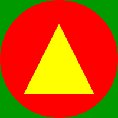

LapisLegit, a font to test the OpenType SVG table
By
Roel Nieskens
. More info on
Github
!
Order of images: font glyph, SVG as image tag, SVG inlined.
A
0041: Original SVG
B
0042: Rotated 90 degrees with inline style on group
C
0043: Opacity: 0.5 with inline style on group
D

0044: Animating opacity from 0.1 to 1
E
0045: JavaScript console.log saying "Hello from glyph 0045!"
 0041: Original SVG
0041: Original SVG
0041: Original SVG
0041: Original SVG 0042: Rotated 90 degrees with inline style on group
0042: Rotated 90 degrees with inline style on group 0043: Opacity: 0.5 with inline style on group
0043: Opacity: 0.5 with inline style on group